@[TOC]目录
pygame模块进行 游戏开发pygame快速体验pygame 就是一个python模块，专为电子游戏设计| 网站栏目 | 内容 |
|---|---|
| GettingStarted | 在各平台安装模块的说明 |
| Docs | pygame模块所有类和子类的参考手册 |
pip install pygame
python -m pygame.example.aliens
pygame创建图形窗口hm_pygame入门.py可以将图片素材绘制到游戏的窗口上，开发游戏之前需要先知道 如何建立游戏窗口!
pygame提供的所有功能之前，需要调用 init方法quit方法| 方法 | 说明 |
|---|---|
| pygame.init() | 导入并初始化所有pygame模块，使用其他模块之前，必须先调用init方法 |
| pygame.quit() | 写在所有pygame模块，在游戏结束之前调用！ |
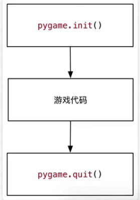
(0,0)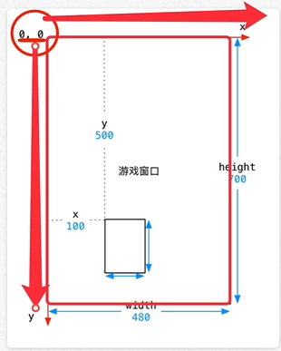
- 在游戏中，所有可见的元素 都是以 矩形区域 来描述位置的
- 要描述一个矩形区域有四个要素: (x,y) (width,height)
- pygame 专门提供一个类pygame.Rect用于描述 矩形区域
Rect(x,y,width,height) -> Rect
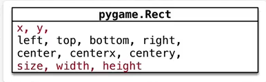
Rect.size返回值是元组(width,height)
pygame.Rect是一个比较特殊的类，内部只是封装了一些数字计算pygame.init()方法同样能够直接使用hero_rect()矩形描述 英雄的位置和大小x和y)pygame专门提供了一个模块 pygame.display用于创建、管理游戏窗口| 方法 | 说明 |
|---|---|
| pygame.display.set_mode() | 初始化游戏显示窗口 |
| pygame.display.update() | 刷新屏幕内容显示，稍后使用 |
set_mode()方法
set_mode(resolution=(0,0),flags=0,depth=0) -> Surface
resolution指定屏幕的宽和高，默认创建的窗口大小和屏幕大小一致flags参数指定屏幕的附加选项，例如是否全屏等等，默认不需要传递depth参数表示颜色的位数，默认自动怕匹配、注意: 必须使用变量记录 set_mode()方法的返回结果！因为：后续所有的图像绘制都基于这个返回结果
#创建游戏主窗口
screen = pygame.display.set_mode((480,700))
在 创建游戏窗口 代码下方，增加一个无限循环
注意: 游戏窗口不需要重复创建
# 创建游戏主窗口
screen = pygame.display.set_mode((480,700))
# 游戏循环
while True:
pass
pygame.image.load()加载图像的数据blit()方法将图像绘制到指定位置pygame.display.update()方法更新整个屏幕的显示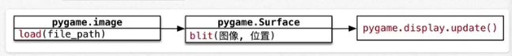
提示: 要想在屏幕上看到绘制的结果，就一定要调用
pygame.display.update()方法
background.png 创建背景(0,0) 位置me1.png 创建英雄飞机(200,500)位置调用屏幕更新显示飞机图像
# 1. 加载图像数据
bg = pygame.image.load("./素材/images/me1.png")
# 2. blit绘制图像
screen.blit(bg,(0,0))
# 3. update 更新屏幕显示
pygame.display.update()
png格式的图像是支持透明的可以在
screen对象完成 所有blit方法之后，统一调用一次display.update()方法， 同样可以在屏幕上看到最终的绘制结果 - 使用display.set_mode()创建的screen对象是一个内存中的屏幕数据对象 - 可以理解成时 油画的画布 -screen.blit方法可以在画布上绘制很多图像 - 例如：英雄、敌机、子弹 - 这些图像 有可能 会彼此重叠或者覆盖 -display.update()会将画布的最终结果绘制在屏幕上，这样可以 提高屏幕绘制效率，增加游戏的流畅度
import pygame
from time import clock
pygame.init()
# 创建游戏窗口
screen = pygame.display.set_mode(size=(480,700))
# 绘制背景图像
bg = pygame.image.load("./素材/images/bg.png")
screen.blit(bg,(0,0))
# 绘制英雄的飞机
me1 = pygame.image.load("./素材/images/me1.png")
screen.blit(me1,(200,500))
# 可以在所有绘制工作完成之后，统一调用update方法
pygame.display.update()
# 游戏循环
while True:
#clock.tick(60) # 通过tick方法每秒刷新60帧
for event in pygame.event.get():
if event.type == pygame.QUIT:
pygame.quit()
print("退出游戏……")
现在英雄飞机已经被绘制到屏幕上了，怎么能够让飞机移动呢？
游戏循环的开始 就意味着 游戏的正式开始
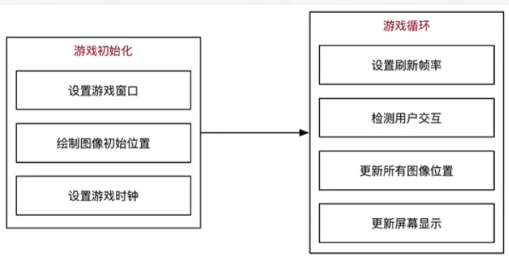
1/60秒移动一下所有图像的位置pygame.display.update()更新屏幕显示pygame专门提供一个类 pygame.time.Clock可以非常方便的设置屏幕绘制速度 -- 刷新帧率tick(帧率)方法tick方法会根据上次被调用的时间，自动设置游戏循环中的延时pygame.Rect的变量记录英雄的初始位置y-1--向上移动y<=0将英雄移动到屏幕底部提示: - 每一次调用
update()方法之前，需要把所有的游戏图像都重新绘制一遍 - 而且应该最先重新绘制背景图像
# 1. 定义Rect记录飞机的初始位置
hero_rect = pygame.Rect(200,500,102,126)
# 游戏循环 -> 意味着游戏的正式开始
while True:
# 指定循环体内不代码执行的帧率
clock.tick(60) # 通过tick方法每秒刷新60帧
# 2. 修改飞机位置
if hero_rect.y>-hero_rect.height:
hero_rect.y -= 1
else:
hero_rect.y = 700
# 3. 调用blit方法绘制图像
# 如果只绘制飞机图像，会出现飞机残影
# 解决办法：先重新绘制背景图像直接遮挡先前图像，再绘制飞机
screen.blit(bg, (0, 0))#重新绘制背景图像
screen.blit(me1,hero_rect)
# 4. 调用update方法更新显示
pygame.display.update()
for event in pygame.event.get():
if event.type == pygame.QUIT:
pygame.quit()
print("退出游戏……")
将飞机移动到屏幕底部
#2. 修改飞机位置
if hero_rect.y>- hero_rect.height:
hero_rect.y -= 1
else:
hero_rect.y = 700
只有捕获到用户具体的操作，才能有针对性的做出响应
pygame中通过 `pygame.event.get()可以获得用户当前所做动作的事件列表
提示: 这段代码非常的固定，几乎所有的 pygame游戏都大同小异
clock = pygame.time.Clock()
#游戏循环
while True:
# 设置屏幕刷新帧率
clock.tick(60)
#事件监听
# pygame.event.get() 返回值 list
for event in pygame.event.get():
if event.type == pygame.QUIT:
print("退出游戏……")
pygame.quit()
# 直接退出系统
exit()
pygame提供了两个类
pygame.sprite.Sprite--存储图像数据 image和 位置rect的对象pygame.sprite,Group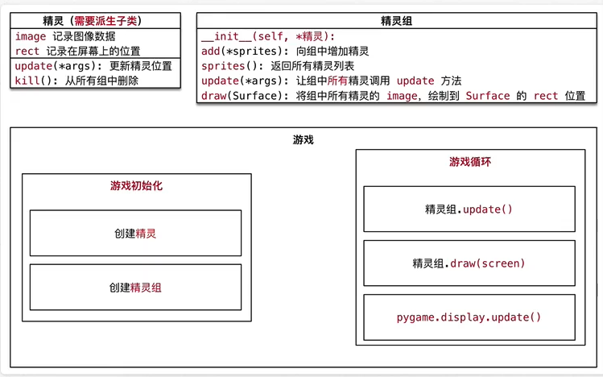
plane_sprites.py文件GameSprite 继承自 `pygame.sprite.Spriteobjectsuper()一下父类的 __init__方法__init__代码能够被正常执行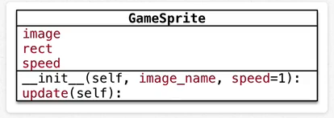
image精灵图像，使用 image_name加载rect精灵大小，默认使用图像大小speed精灵移动速度，默认为 1update每次更新屏幕时在游戏循环内调用
self.rect.y+=self.speedImage的 get_rect()方法，可以返回pygame.Rect(0,0,图像宽,图像高)的对象
import pygame
class GameSprite(pygame.sprite.Sprite):
"""飞机大战游戏精灵"""
def __init__(self,image_name,speed=1):
# 调用父类的初始化方法
super().__init__()
# 定义对象的属性
self.image = pygame.image.load(image_name)
self.rect = self.image.get_rect()
self.speed = speed
def update(self):
# 在屏幕的垂直方向上移动
self.rect.y +=self.speed
from 导入 plane_sprite模块
from导入的模块可以直接使用import导入的模块需要通过模块名来使用update()和 draw(screen)方法update()方法，根据游戏需求，更新位置rectupdate方法，让精灵组中的所有精灵调用update方法更新位置draw()方法，在screen上绘制精灵组中的所有精灵目标 -- 使用面向对象设计飞机大战游戏类
PlaneGame类如下：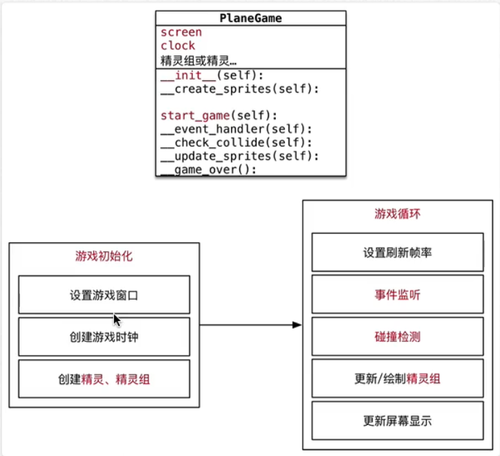
提示 根据 职责封装私有方法，可以避免某一个方法的代码写得太过冗长 如果某一个方法编写的太长，既不好阅读，也不好维护 - **游戏初始化 --
__init__()会调用一下方法:
| 方法 | 职责 |
|---|---|
| __event_handler(self) | 事件监听 |
| __check_collide(self) | 碰撞检测 -- 子弹销毁敌机、敌机撞毁英雄 |
| __update_sprites(self) | 精灵组更新和绘制 |
| __game_over() | 游戏结束 |
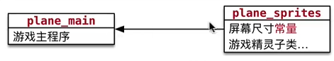
plane_main
plane_sprites
plane_main.py文件，并且设置为可执行编写 基础代码
import pygame
class PlaneGame(object):
"""飞机大战主游戏"""
def __init__(self):
print("游戏初始化")
# 1. 创建游戏的窗口
self.screen = pygame.display.set_mode((480,700))
# 2. 创建游戏的时钟
self.clock = pygame.time.Clock()
# 3. 调用私有方法，精灵和精灵组的创建
self.__create_sprites()
def __create_sprites(self):
pass
- 常量 -- 不变化的量
- 变量 -- 可以变化的量
700提示： Python中并没有真正意义的常量，只是通过命名的约定 -- 所有字母大写的就是常量，开发时不要轻易的修改！
plane_sprites.py中增加常量定义运行 备课代码，观察背景图像的显示效果 - 游戏启动后，背景图像会连续不断地向下方移动 - 在视觉上 产生英雄地飞机不断向上方飞行地 错觉 -- 在很多跑酷类游戏中常用地套路 - 游戏地背景 不断变化 - 游戏地主角 位置保持不变
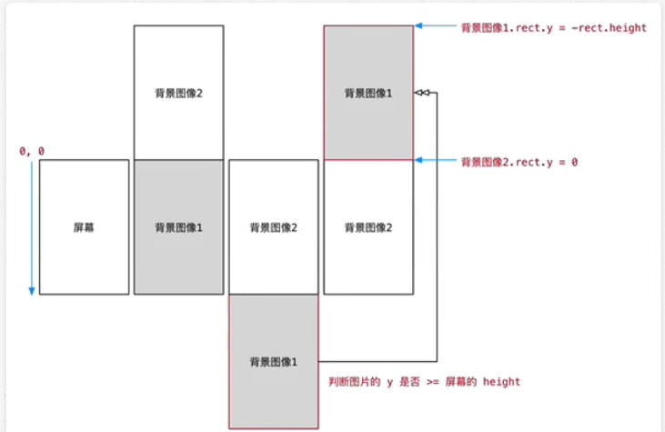
1涨完全和屏幕重合2涨在屏幕地正上方rect.y >= 屏幕的高度说明已经移动到屏幕下方rect.y = -rect.heightis_alt判断是否是另一张图像
False表示 第一张图像，需要与屏幕重合True表示 另一张图像，在屏幕的正上方继承如果父类提供的方法，不能满足子类的需求 - 派生一个子类 - 在子类中针对特有的需求，重写父类方法，并且进行扩展
在plane_sprites新建Background继承自GameSprtie
class Background(GameSprite):
"""游戏背景精灵"""
def update(self):
# 1. 调用父类的方法实现
super().update()
# 2. 判断是否移出屏幕,如果移出屏幕，将图像设置到屏幕的上方,
if self.rect.y >= SCREEN_RECT.height
self.rect.y = -self.rect.height
__create_sprites方法中创建精灵和精灵组__update_sprites方法中，让精灵组调用 update()和draw()方法
__create_sprites方法
def __create_sprites(self):
# 创建背景精灵和精灵组
bg1 = Background('./素材/images/bg.png')
bg2 = Background('./素材/images/bg.png')
bg2.rect.y = -bg2.rect.height # 初始化第二章背景精灵位置
self.back_group = pygame.sprite.Group(bg1,bg2)
def __update_sprites(self):
self.back_group.update()
self.back_group.draw(self.screen)
思考 -- 上一小节完成的代码存在什么样的问题？能否简化？ - 在主程序中，创建的两个北京经理，传入了相同的图像文件路径 - 创建 第二个背景精灵时，在主程序中，设置背景精灵的图像位置 思考 -- 精灵初始位置的设置，应该由主程序负责？还是由精灵自己负责？
答案 -- 由精灵自己负责 - 根据面向对象设计原则，应该将对象的职责，封装到类的代码内部 - 尽量简化程序调用一方的代码调用
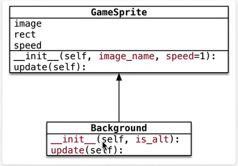
is_alt判断是否是另一张图像
FalseBiaoshi第一张图像，需要与屏幕怒重合True表示另一张图像，在屏幕的正上方
在 plane_sprites.py中实现 Background的初始化方法Enemy类运行备课代码，观察敌机的出现规律 1. 游戏启动后，每隔一秒会出现一架敌机 2. 每架飞机向屏幕下方飞行，飞行速度各不相同 3. 每架敌机出现的 水平位置也不尽相同 4. 当敌机从屏幕下方飞出，不会再飞回到屏幕中
pygame中可以使用 pygame.set_timer()来添加 定时器所谓 定时器， 就是 每隔一段时间，去执行一些动作
set_timer(eventid,milliseconds) -> None
set_timer可以创建一个事件
pygame.USEREVENT来指定
USEREVENT是一个整数，再添加的事件可以使用 USEREVENT + 1指定，依此类推...pygame.event.get()可以获取当前时刻所有的事件列表event.type是否等于eventid，如果相等，表示定时器事件发生pygame的定时器使用套路非常固定:
1. 定义定时器常量 -- eventid
2. 在初始化方法中，调用 set_timer方法设置定时器事件
3. 在游戏循环中，监听定时器事件
在 plane_sprties.py的顶部定义 时间常量
# 敌机出现事件
CREATE_ENEMY_EVENT = pygame.USEREVENT
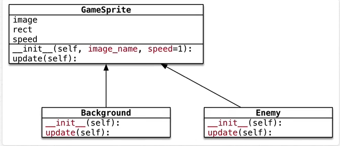
class Enemy(GameSprite):
def __init__(self):
# 1. 调用父类方法，创建敌机精灵，同时指定敌机图片
super(Enemy, self).__init__("./素材/images/enemy1.png")
# 2. 指定敌机的初始随机速度
self.speed = 1
# 3. 指定敌机的初始随机位置
def update(self):
# 1. 调用父类方法，保持垂直方向的飞行
super(Enemy, self).update()
# 2. 判断是否飞出屏幕，如果是，需要从精灵组删除。
if self.rect.y >= SCREEN_RECT.height:
print("飞出屏幕，需要从精灵组删除....")
create_sprites,添加 敌机精灵组
__event_handler,创建敌机，并且添加到精灵组
add方法，可以向精灵组添加精灵__ypdate_sprites,让敌机精灵组调用 update和 draw方法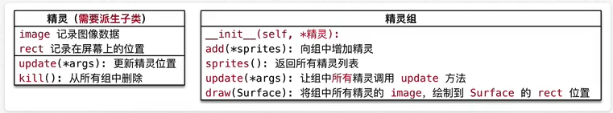
修改 plane_main的 __create_sprites方法
# 创建敌机的精灵组
self.enemy_group = pygame.sprite.Group()
修改 plane_main的 __update_sprites方法
# 敌机精灵组
self.enemy_group.update()
self.enemy_group.draw(self.screen)
定时出现敌机
elif event.type == CREATE_ENEMY_EVENT:
print("敌机出现...")
# 创建敌机精灵
enemy = Enemy()
# 将敌机精灵添加到敌机精灵组
self.enemy_group.add(enemy)
在导入模块时，建议按照一下顺序导入
1. 官方标准模块导入
2. 第三方模块导入
3. 应用程序模块导入
修改 plane_sprites.py增加 random的导入
import random
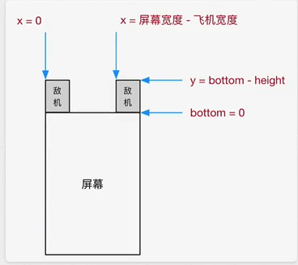
使用 pygame.Rect提供的bottom属性，在指定敌机初始位置时，会比较方便
bottom = y + heighty = bottom - height修改初始化方法，随机敌机出现速度和位置
def __init__(self):
# 1. 调用父类方法，创建敌机精灵，同时指定敌机图片
super(Enemy, self).__init__("./素材/images/enemy1.png")
# 2. 指定敌机的初始随机速度
self.speed = random.randint(1, 3)
# 3. 指定敌机的初始随机位置
self.rect.bottom = 0
max_x = SCREEN_RECT.width - self.rect.width
self.rect.x = random.randint(0, max_x)
敌机移出屏幕之后，如果没有撞到英雄，敌机的历史使命已经终结
需要从敌机组删除，否则会造成内存浪费。
__del__内置方法会在对象被销毁前调用，在开发时，可以用于 判断对象是否被销毁
def __del__(self):
print("敌机挂了 %s" % self.rect)
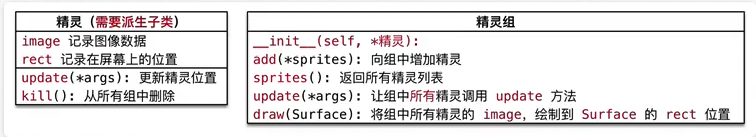
判断敌机是否飞出屏幕，如果是，调用kill()方法从所有组中删除
def update(self):
# 1. 调用父类方法，保持垂直方向的飞行
super(Enemy, self).update()
# 2. 判断是否飞出屏幕，如果是，需要从精灵组删除。
if self.rect.y >= SCREEN_RECT.height:
print("飞出屏幕，需要从精灵组删除....")
# kill方法可以将精灵从所有精灵组中移出，精灵被自动销毁
self.kill()
pygame.key.get_pressed()移动英雄120像素0.5秒发射一次子弹，每次，连发三枚子弹bullets子弹精灵组保存子弹精灵bullets属性，和记录所有子弹精灵fire方法，用于发射子弹### Bullet -- 子弹 - 初始化方法 - 指定子弹图片 - 初始速度=-2 -- 子弹需要向上飞行 - 重写 update()方法 - 判断是否飞出屏幕，如果是，从精灵组删除
plane_sprites新建Hero类0bottom = y + height
class Hero(GameSprite):
"""英雄精灵"""
def __init__(self):
# 1. 调用父类方法，设置image & speed
super(Hero, self).__init__("./素材/images/me1.png", speed=0)
# 2. 初始化英雄飞机位置
self.rect.centerx = SCREEN_RECT.centerx
self.rect.bottom = SCREEN_RECT.bottom - 120
1.在 __create_sprites,添加英雄精灵和英雄精灵组
- 后续要针对英雄做 碰撞检测以及发射子弹
- 所以英雄需要 单独定义成属性
2. 在 __update_sprites,让 英雄精灵组调用 update和 draw方法
修改 __create_sprites方法如下:
# 创建英雄的精灵和精灵组
self.hero = Hero()
self.hero_group = pygame.sprite.Group(self.hero)
修改 __update_sprites方法如下:
self.hero_group.update()
self.hero_group.draw(self.screen)
在
pygame中针对键盘按键的捕获有两种方式 - 第一种方式 判断event.type = pygame.KEYDOWN- 第二种方式 1. 首先使用pygame.key.get_pressed()返回所有按键元组 2. 通过 键盘常量，判断元组中 某一个键是否被按下 -- 如果被按下，对应数值为1提问 这两种方式有什么区别呢?
第一种方式 按着不动只能输出一次
elif event.type == pygame.KEYDOWN and event,key == pygame.K_RIGHT:
print("向右移动...")
第二种方式
# 返回所有按键的元组，如果某个键被按下，对应的值会是1
keys_pressed = pygame.key.get_pressed()
# 判断是否按下了方向键
if keys_pressed[pygame.K_RIGHT]:
print("向右移动...")
event.type用户 必须要抬起按键 才算一次 按键事件，操作灵活性会大打折扣Hero类中重写 update方法
speed和英雄rect.x进行叠加_-event_handler方法中根据左右方向键 设置英雄的速度
speed = 2speed = -2speed = 0Hero类，重写 update()方法，根据速度水平移动英雄的飞机Hero类的 update()方法判断英雄是否超出屏幕边界right = x + width 利用 right属性可以非常容易地针对右侧设置精灵位置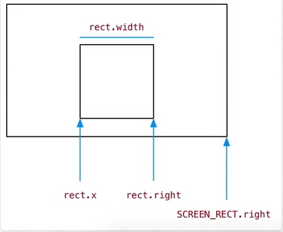
class Hero(GameSprite):
"""英雄精灵"""
def __init__(self):
# 1. 调用父类方法，设置image & speed
super(Hero, self).__init__("./素材/images/me1.png", speed=0)
# 2. 初始化英雄飞机位置
self.rect.centerx = SCREEN_RECT.centerx
self.rect.bottom = SCREEN_RECT.bottom - 120
def update(self):
# 英雄在水平方向移动
self.rect.x += self.speed
# 控制英雄不能离开屏幕
if self.rect.x <0:
self.rect.x = 0
if self.rect.right >SCREEN_RECT.right:
self.rect.right = SCREEN_RECT.right
pass
120像素0.5秒发射一次子弹，每次连发三枚子弹pygame地定时器 使用套路非常固定：
1. 定义 定时器常量 -- eventid
2. 在初始化方法中，调用 set_timer方法设置定时器事件
3. 在 游戏循环中，监听定时器事件
在 Hero中定义 fire方法
def fire(self):
print("发射子弹...")
在 __init__方法中创建定时器
# 每隔 0.5 秒发射一次子弹
pygame.time.set_timer(HERO_FIRE_EVENT, 500)
在 __event_handler方法中让英雄发射子弹
elif event.type == HERO_FIRE_EVENT:
self.hero.fire()
plane_sorites新建 Bullet集成自GameSpriteupdate() 方法, 判断子弹 飞出屏幕从精灵组删除Hero的初始化方法中创建 子弹精灵组 属性plane_main.py的__update_sprites方法，让子弹精灵组调用update和draw方法fire方法
初始化方法
# 创建子弹组
self.bullets = pygame.sprite.Group()
修改 fire()方法
def fire(self):
print("发射子弹...")
# 1. 创建子弹精灵
bullet = Bullet()
# 2. 设置精灵的位置
bullet.rect.bottom = self.rect.y - 20
bullet.rect.centerx = self.rect.centerx
# 3. 将精灵添加到精灵组
self.bullets.add(bullet)
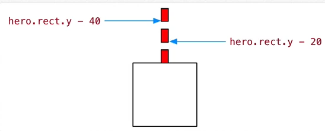
fire()方法，一次发射三枚子弹pygame提供了两个非常方便的方法可以实现碰撞检测:两个精灵组 中 所有的精灵 的碰撞检测
groupcpllide(group1,group2,dokill1,dokill2,collided = None) -> Sprite_dict
如果将 dokill 设置为 True，则 发生碰撞的精灵将被自动移除
collided参数适用于 计算碰撞得到回调函数
rect属性判断 某个精灵 和 指定精灵组 中的精灵的碰撞
spritecollied(sprite,group,dokill,collides = None) -> Sprite_list
如果将 dokill设置为 True,则 指定精灵组 中 发生碰撞的精灵将被自动移出
collided参数是用于 计算碰撞的回调函数
rect属性def __check_collide(self):
# 1. 子弹摧毁敌机
bullet_hit_enemies = pygame.sprite.groupcollide(self.hero.bullets, self.enemy_group, True, False)
if len(bullet_hit_enemies) > 0:
for hited_enemies in bullet_hit_enemies.values():
for enemy in hited_enemies:
# print(bullet_hit_enemies)
# self.enemy_group.empty()
self.score += enemy.value
enemy.hit = True
# print(lists)
# 2. 敌机撞毁英雄
enemies = pygame.sprite.spritecollide(self.hero, self.enemy_group, True)
# 3. 判断列表是否有内容，如果有，则英雄牺牲，退出游戏
if len(enemies) > 0:
# 让英雄牺牲
self.hero.hit = True
# 结束游戏
# PlaneGame.__game_over()